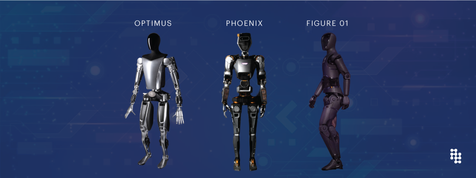

SuperStupidity: Why AI Sucks
With all the dramatized media and Hollywood narratives around Super-Intelligent AI it’s easy to become bullish on AGI. But what really is AGI? Are we there already? What would it take to get there? How long? These are all questions that no one seems to want to answer. We have a sense that AGI is smarter than us, better at everything, and sentient! That’s a spooky word. But not only can we not explain how sentient AI will come about, we don’t even understand what sentient AI would look like. One theory is that sentient AI must have an understanding of the physical world. This makes sense intuitively, all living beings exist in physical space and are adapted to their particular environment. AI right now does not respond to physical stimuli. You punch ChatGPT all you’ll get is a broken computer.

Moravec’s Paradox
When AI Robot Figure 01 made a cup of coffee earlier this year he broke the internet. When I made a cup of coffee this morning the Wawa cashier roasted my hoodie. Why is it that something so simple is such a big achievement for robotics and AI and yet we take the incredibly complex stuff AI can do completely for granted. This is the essence of Moravec’s paradox.
| Easy for AI | Hard for AI |
|---|---|
| chess | walking |
| programming | recognizing |
| high-level reasoning | smelling |
The fascination with AI’s prowess in chess and programming, juxtaposed against its struggle with seemingly mundane tasks like walking or smelling, underscores a fundamental misunderstanding about intelligence itself. Moravec’s Paradox doesn’t just highlight the differences between human and machine intelligence; it peels back the layers on what intelligence means in the context of our physical world. Intelligence, as we’re beginning to understand, isn’t just about processing information or executing complex strategies in a game of chess. It’s about interacting with, understanding, and adapting to the physical environment around us.
So, where does this leave us in the quest for AGI, or Artificial General Intelligence? By definition, AGI would be capable of understanding and learning any intellectual task that a human being can. Yet, as Moravec’s Paradox suggests, the tasks we humans find easy are precisely those that are hardest for AI to master. This doesn’t mean that AGI is an impossible dream, but it does imply that our path to achieving it is more complicated than simply scaling up the processing power or refining the algorithms of our current AI systems.
The journey toward AGI might require us to rethink our approach to artificial intelligence from the ground up. Instead of focusing solely on enhancing AI’s computational abilities, we may need to develop machines that can interact with the physical world in a more nuanced and adaptive way. This could involve integrating AI with robotics in more sophisticated manners, developing sensors that mimic human senses more closely, or even creating new forms of AI that are inspired by the way biological organisms learn and interact with their environment.
Moreover, the pursuit of AGI raises profound ethical and philosophical questions. What does it mean for a machine to be sentient? How do we ensure that AGI systems align with human values and ethics? And perhaps most importantly, how do we manage the societal impacts of creating machines that could potentially match or exceed human intelligence in every domain?

Addressing these questions requires a multidisciplinary approach, bringing together experts from AI and robotics, philosophy, ethics, and social sciences. It also demands a level of international cooperation and dialogue to ensure that the development of AGI benefits humanity as a whole, rather than leading to increased inequality or conflict.
In conclusion, the path to AGI is fraught with challenges that are both technical and philosophical in nature. Moravec’s Paradox serves as a reminder that intelligence is not just about the mind but also about the body and the complex ways in which they interact with the world. As we continue to explore this frontier, we must do so with humility, caution, and a profound sense of responsibility towards the future we are shaping. The journey to AGI isn’t just a technological quest—it’s a deeply human one, reflecting our own understanding of what it means to be intelligent, sentient, and, ultimately, alive.